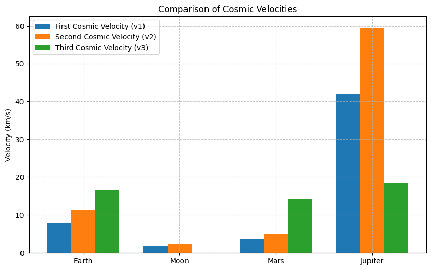
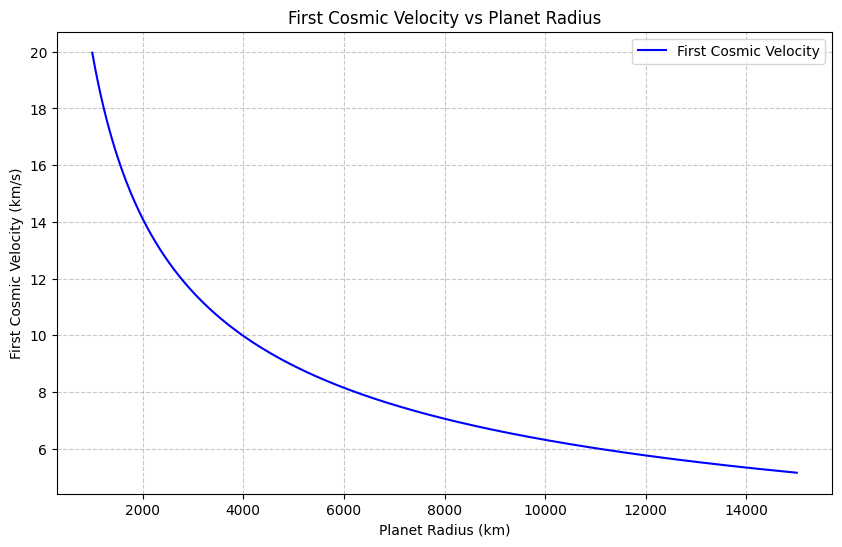
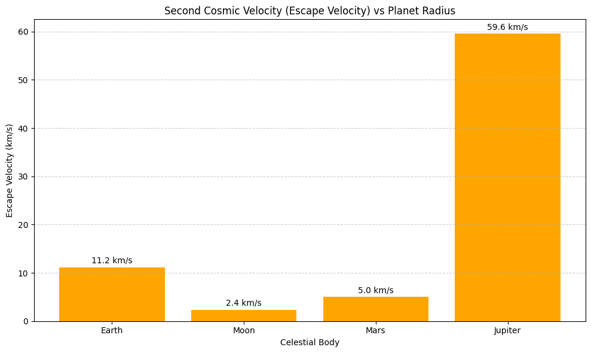
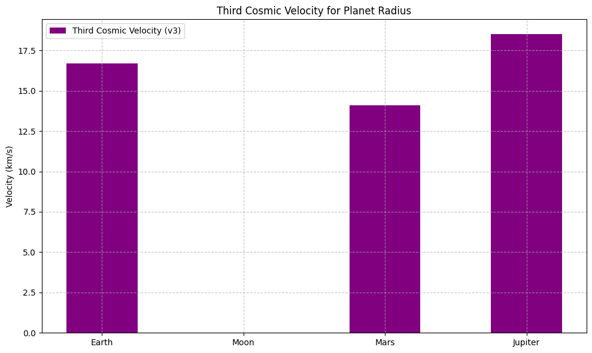
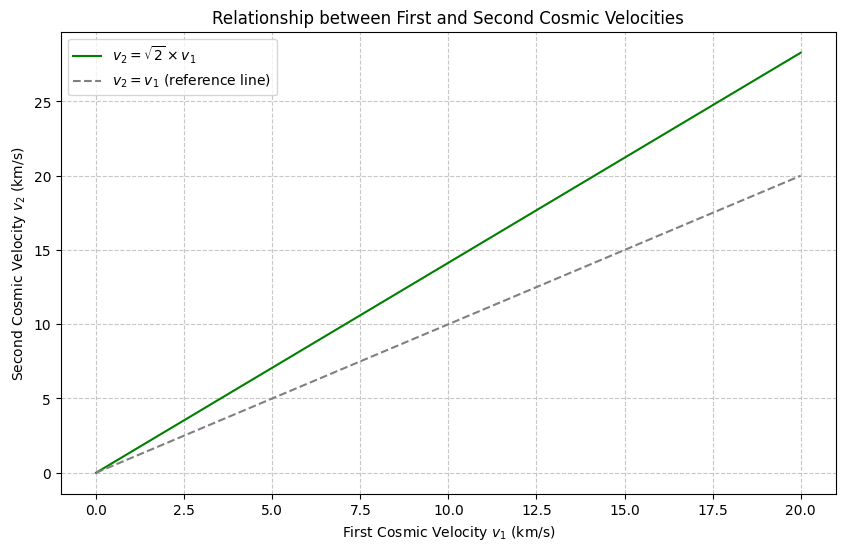

Gravity Problem 2: Derivation of Three Cosmic Velocities
1. First Cosmic Velocity (\(v_1\))
The first cosmic velocity is the minimum velocity an object must have to remain in a stable orbit around a planet. The gravitational force provides the required centripetal force for circular motion.
The gravitational force is:
The centripetal force is:
Setting these equal gives:
Simplifying:
Thus, the first cosmic velocity is:
2. Second Cosmic Velocity (\(v_2\))
The second cosmic velocity (escape velocity) is the minimum velocity needed to escape the gravitational pull of a planet. The kinetic energy must be equal to the gravitational potential energy to escape.
The gravitational potential energy is:
The kinetic energy needed to escape is:
Setting the total energy to zero for escape:
This gives:
Solving for \(v_2\):
Thus, the second cosmic velocity is:
3. Third Cosmic Velocity (\(v_3\))
The third cosmic velocity is the velocity required for an object to escape the Sun’s gravitational influence, which is the escape velocity from the solar system at Earth's orbit.
The equation for the third cosmic velocity is:
Where: - \(M_{\text{sun}}\) is the mass of the Sun. - \(r_{\text{sun}}\) is the distance from Earth to the Sun.
Thus, the third cosmic velocity is:
Values of the Cosmic Velocities for Earth
We will now calculate the values of the three cosmic velocities for Earth using the following constants:
- Gravitational constant, \(G = 6.67430 \times 10^{-11} \, \text{m}^3 \, \text{kg}^{-1} \, \text{s}^{-2}\)
- Earth's mass, \(M_{\text{Earth}} = 5.97 \times 10^{24} \, \text{kg}\)
- Earth's radius, \(R_{\text{Earth}} = 6.371 \times 10^{6} \, \text{m}\)
- Sun's mass, \(M_{\text{sun}} = 1.989 \times 10^{30} \, \text{kg}\)
- Earth-Sun distance, \(r_{\text{sun}} = 1.496 \times 10^{11} \, \text{m}\)
We can now compute the cosmic velocities for Earth.
- First Cosmic Velocity (\(v_1\)):
- Second Cosmic Velocity (\(v_2\)):
- Third Cosmic Velocity (\(v_3\)):
Visual/Data Comparison with Moon, Mars, and Jupiter
We now compare the cosmic velocities for Earth, Moon, Mars, and Jupiter. Below are the relevant properties of each body:
Data for the planets and moons:
- Moon:
- Radius: \(R_{\text{Moon}} = 1.737 \times 10^6 \, \text{m}\)
- Mass: \(M_{\text{Moon}} = 7.35 \times 10^{22} \, \text{kg}\)
-
Distance from Earth: \(r_{\text{Earth-Moon}} = 384,400 \, \text{km}\) (we will consider Earth's escape velocity for comparison)
-
Mars:
- Radius: \(R_{\text{Mars}} = 3.396 \times 10^6 \, \text{m}\)
-
Mass: \(M_{\text{Mars}} = 6.42 \times 10^{23} \, \text{kg}\)
-
Jupiter:
- Radius: \(R_{\text{Jupiter}} = 6.991 \times 10^7 \, \text{m}\)
- Mass: \(M_{\text{Jupiter}} = 1.90 \times 10^{27} \, \text{kg}\)
These values can be used to compute the cosmic velocities for Moon, Mars, and Jupiter using the same formulas as above.
Let me know if you need any more adjustments or if I can assist you further with anything else!
📊 Visualization Ideas
- Bar Chart: Compare \(v_1\) and \(v_2\) for Earth, Moon, Mars, and Jupiter.
- Orbit Diagram: Visualize scale and escape paths.
- Energy Diagram: Show kinetic vs potential energy during escape.
📎 Notes
- Third cosmic velocity (\(v_3\)) assumes an object escapes directly from Earth’s orbit from the Sun — not from the Earth's surface.
- Actual mission trajectories involve complex gravity assists and slingshots.
📚 Further Reading
- NASA Solar System Dynamics
- Fundamentals of Astrodynamics – Bate, Mueller, White

import matplotlib.pyplot as plt
# Data
bodies = ['Earth', 'Moon', 'Mars', 'Jupiter']
v1 = [7.9, 1.68, 3.55, 42.1]
v2 = [11.2, 2.38, 5.03, 59.5]
v3 = [16.7, None, 14.1, 18.5] # Moon doesn't have v3 in same sense
x = range(len(bodies))
# Plot
plt.figure(figsize=(10, 6))
plt.bar(x, v1, width=0.25, label='First Cosmic Velocity (v1)', align='center')
plt.bar([i + 0.25 for i in x], v2, width=0.25, label='Second Cosmic Velocity (v2)', align='center')
plt.bar([i + 0.5 for i in x], [v if v else 0 for v in v3], width=0.25, label='Third Cosmic Velocity (v3)', align='center')
plt.xticks([i + 0.25 for i in x], bodies)
plt.ylabel('Velocity (km/s)')
plt.title('Comparison of Cosmic Velocities')
plt.legend()
plt.grid(True, linestyle='--', alpha=0.7)
plt.show()

import numpy as np
import matplotlib.pyplot as plt
# Constants
G = 6.67430e-11 # gravitational constant in m^3 kg^-1 s^-2
M = 5.972e24 # mass of Earth in kg (we'll keep it constant for this graph)
# Generate a range of planet radii (in meters)
radii = np.linspace(1e6, 1.5e7, 500) # from 1000 km to 15000 km
# Calculate first cosmic velocity for each radius
v1 = np.sqrt(G * M / radii)
# Convert velocity to km/s
v1_km_s = v1 / 1000
# Plotting
plt.figure(figsize=(10,6))
plt.plot(radii/1000, v1_km_s, label='First Cosmic Velocity', color='blue') # radii in km
plt.xlabel('Planet Radius (km)')
plt.ylabel('First Cosmic Velocity (km/s)')
plt.title('First Cosmic Velocity vs Planet Radius')
plt.grid(True, linestyle='--', alpha=0.7)
plt.legend()
plt.show()

import numpy as np
import matplotlib.pyplot as plt
# Gravitational constant (m^3 kg^-1 s^-2)
G = 6.67430e-11
# Planetary data: Radius (m), Mass (kg)
bodies = {
"Earth": {"R": 6.371e6, "M": 5.97e24},
"Moon": {"R": 1.74e6, "M": 7.35e22},
"Mars": {"R": 3.39e6, "M": 6.42e23},
"Jupiter": {"R": 7.15e7, "M": 1.90e27}
}
# Calculate second cosmic velocity (v2) for each body
radii = []
v2_values = []
labels = []
for body, data in bodies.items():
R = data["R"]
M = data["M"]
v2 = np.sqrt(2 * G * M / R) / 1000 # Convert to km/s
radii.append(R / 1e6) # Convert radius to millions of kilometers
v2_values.append(v2)
labels.append(body)
# Plotting: Second Cosmic Velocity vs Planet Radius (only second velocity)
plt.figure(figsize=(10, 6))
# Create bar plot for escape velocity (v2)
plt.bar(labels, v2_values, color='orange')
# Adding title and labels
plt.title("Second Cosmic Velocity (Escape Velocity) vs Planet Radius")
plt.xlabel("Celestial Body")
plt.ylabel("Escape Velocity (km/s)")
# Annotating bars with values for escape velocity
for i, value in enumerate(v2_values):
plt.text(i, value + 0.5, f"{value:.1f} km/s", ha='center', va='bottom')
plt.grid(axis='y', linestyle='--', alpha=0.6)
plt.tight_layout()
plt.show()

import matplotlib.pyplot as plt
# Data for celestial bodies and their third cosmic velocities (km/s)
bodies = ['Earth', 'Moon', 'Mars', 'Jupiter']
v3 = [16.7, None, 14.1, 18.5] # Third Cosmic Velocity (v3), None for Moon as it doesn't apply
x = range(len(bodies))
# Plotting the bar chart for third cosmic velocity
plt.figure(figsize=(10, 6))
# Third Cosmic Velocity (v3), None for Moon, replace None with 0 for the plot
plt.bar(x, [v if v else 0 for v in v3], width=0.5, label='Third Cosmic Velocity (v3)', color='purple', align='center')
# Set x-ticks to be the body names
plt.xticks(x, bodies)
# Adding labels and title
plt.ylabel('Velocity (km/s)')
plt.title('Third Cosmic Velocity for Planet Radius')
# Adding a legend
plt.legend()
# Grid for better visualization
plt.grid(True, linestyle='--', alpha=0.7)
# Show the plot
plt.tight_layout()
plt.show()

import numpy as np
import matplotlib.pyplot as plt
# Define a range of first cosmic velocities (v1) in km/s
v1 = np.linspace(0, 20, 500)
# Calculate second cosmic velocities (v2)
v2 = np.sqrt(2) * v1
# Plotting
plt.figure(figsize=(10,6))
plt.plot(v1, v2, label=r'$v_2 = \sqrt{2} \times v_1$', color='green')
plt.plot(v1, v1, linestyle='--', color='gray', label=r'$v_2 = v_1$ (reference line)')
plt.xlabel('First Cosmic Velocity $v_1$ (km/s)')
plt.ylabel('Second Cosmic Velocity $v_2$ (km/s)')
plt.title('Relationship between First and Second Cosmic Velocities')
plt.grid(True, linestyle='--', alpha=0.7)
plt.legend()
plt.show()